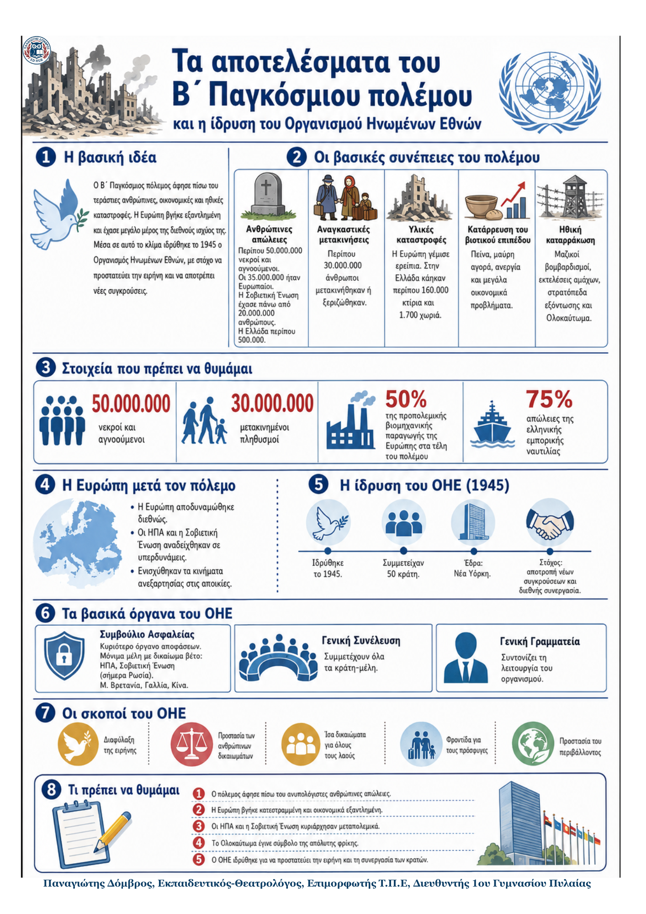

Δεν βρέθηκε η λέξη ή η φράση μέσα στην ενότητα.
1Η βασική ιδέα
Ο Β΄ Παγκόσμιος πόλεμος άφησε πίσω του πρωτοφανείς ανθρώπινες απώλειες, μαζικές μετακινήσεις πληθυσμών και τεράστιες υλικές καταστροφές. Η Ευρώπη βγήκε εξαντλημένη, ενώ οι ΗΠΑ και η Σοβιετική Ένωση αναδείχθηκαν σε νέες υπερδυνάμεις. Μέσα σε αυτό το κλίμα ιδρύθηκε το 1945 ο Οργανισμός Ηνωμένων Εθνών, με κύριο στόχο την αποτροπή νέων πολέμων και την προστασία της ειρήνης. Ο πόλεμος δεν άλλαξε μόνο σύνορα και κυβερνήσεις. Άλλαξε την καθημερινότητα εκατομμυρίων ανθρώπων και έφερε την προστασία της ανθρώπινης αξιοπρέπειας στο κέντρο της διεθνούς πολιτικής.
2Ιστορικό πλαίσιο
- Ο πόλεμος τελείωσε το 1945, ύστερα από συγκρούσεις που είχαν εξαπλωθεί σε πολλές περιοχές του κόσμου.
- Οι πιο βαριές συνέπειες έγιναν αισθητές στην Ευρώπη, όπου πόλεις, βιομηχανίες και δίκτυα μεταφορών είχαν καταστραφεί.
- Εκατομμύρια άμαχοι σκοτώθηκαν, εκτοπίστηκαν ή έμειναν χωρίς τροφή, στέγη και σταθερό εισόδημα.
- Η φρίκη των ναζιστικών εγκλημάτων και της γενοκτονίας των Εβραίων έδειξε την ανάγκη για διεθνή συνεργασία.
3Οι συνέπειες του πολέμου
Ανθρώπινες απώλειες Περίπου 50 εκατομμύρια νεκροί και αγνοούμενοι, από τους οποίους 35 εκατομμύρια ήταν Ευρωπαίοι. Οι άμαχοι αποτέλεσαν μεγάλο μέρος των θυμάτων. |
Μετακινήσεις πληθυσμών Περίπου 30 εκατομμύρια άνθρωποι εγκατέλειψαν ή εξαναγκάστηκαν να αφήσουν τα σπίτια τους. Το 1945 πολλοί δεν είχαν κανένα μέσο διαβίωσης. |
Υλικές καταστροφές Πόλεις, χωριά, σπίτια, λιμάνια, σιδηρόδρομοι και βιομηχανίες καταστράφηκαν. Στην Ελλάδα κάηκαν περίπου 160.000 κτίρια και 1.700 χωριά. |
|---|---|---|
Κατάρρευση βιοτικού επιπέδου Πείνα, μαύρη αγορά, ανεργία και κίνδυνος επιδημιών δυσκόλεψαν την καθημερινή ζωή, ιδιαίτερα στη Γερμανία και την Αυστρία. |
Ηθική καταρράκωση Μαζικοί βομβαρδισμοί, εκτελέσεις, στρατόπεδα εξόντωσης και η γενοκτονία των Εβραίων έγιναν σύμβολα εγκλημάτων κατά του ανθρώπου. |
Νέα παγκόσμια ισορροπία Η Ευρώπη αποδυναμώθηκε. Οι ΗΠΑ και η Σοβιετική Ένωση έγιναν υπερδυνάμεις, ενώ ενισχύθηκαν τα κινήματα ανεξαρτησίας των αποικιών. |
4Τα αποτελέσματα του πολέμου και ο ΟΗΕ
Τα κύρια σημεία
- Από τα περίπου 50.000.000 νεκρών και αγνοουμένων, τα 35.000.000 ήταν Ευρωπαίοι. Η Σοβιετική Ένωση έχασε πάνω από 20.000.000 ανθρώπους.
- Η Ελλάδα έχασε περίπου 500.000 ανθρώπους. Κάηκαν περίπου 160.000 κτίρια και πυρπολήθηκαν 1.700 χωριά.
- Στο τέλος του πολέμου, η ευρωπαϊκή βιομηχανική παραγωγή είχε πέσει περίπου στο 50% της προπολεμικής.
- Πολλά κράτη χρειάζονταν νέα δάνεια για την ανοικοδόμηση. Το μεγαλύτερο μέρος τους προερχόταν από τις ΗΠΑ.
- Η Ευρώπη έχασε μεγάλο μέρος της διεθνούς ισχύος της και έγινε πεδίο ανταγωνισμού ανάμεσα στις ΗΠΑ και τη Σοβιετική Ένωση.
- Παράλληλα, ενισχύθηκαν τα κινήματα των αποικιών που διεκδικούσαν την ανεξαρτησία τους.
5Ο ΟΗΕ: ίδρυση, όργανα και σκοποί
| Ίδρυση | Βασικά όργανα | Κύριοι σκοποί |
|---|---|---|
| Ιδρύθηκε το 1945 από 50 κράτη. Η έδρα του ορίστηκε στη Νέα Υόρκη, γεγονός που φανέρωνε την ενίσχυση του διεθνούς ρόλου των ΗΠΑ. | Συμβούλιο Ασφαλείας, Γενική Συνέλευση και Γενική Γραμματεία. Μόνιμα μέλη με δικαίωμα βέτο είναι οι ΗΠΑ, η Σοβιετική Ένωση (σήμερα Ρωσία), η Βρετανία, η Γαλλία και η Κίνα. Τα μη μόνιμα μέλη εκλέγονται από τη Γενική Συνέλευση. | Διαφύλαξη της ειρήνης, προστασία των ανθρώπινων δικαιωμάτων, ίσα δικαιώματα των λαών, φροντίδα για πρόσφυγες, ανθρωπιστική βοήθεια και προστασία της πολιτιστικής κληρονομιάς. |
6Ορισμοί - γλωσσάρι
Ανοικοδόμηση: η αποκατάσταση μιας χώρας μετά τις καταστροφές του πολέμου.
Βιοτικό επίπεδο: οι συνθήκες ζωής ενός πληθυσμού, όπως τροφή, στέγη, εργασία και υγεία.
Υπερδύναμη: κράτος με πολύ μεγάλη στρατιωτική, οικονομική και πολιτική ισχύ.
Βέτο: το δικαίωμα ενός μόνιμου μέλους να εμποδίσει μια απόφαση του Συμβουλίου Ασφαλείας.
Γενοκτονία: η οργανωμένη προσπάθεια εξόντωσης ενός εθνικού, θρησκευτικού ή άλλου πληθυσμού.
Ανθρωπιστική βοήθεια: υποστήριξη σε ανθρώπους που κινδυνεύουν, με τρόφιμα, φάρμακα, στέγη και προστασία.
7Τι πρέπει να θυμάμαι
- Ο πόλεμος προκάλεσε πρωτοφανείς απώλειες και καταστροφές.
- Οι άμαχοι πλήρωσαν πολύ βαρύ τίμημα.
- Η Ευρώπη αποδυναμώθηκε και αναδείχθηκαν δύο νέες υπερδυνάμεις.
- Ο ΟΗΕ ιδρύθηκε το 1945 για να προστατεύει την ειρήνη και τα ανθρώπινα δικαιώματα.
- Το Συμβούλιο Ασφαλείας είναι το βασικό όργανο λήψης αποφάσεων.
- Ο ΟΗΕ προσφέρει σημαντική ανθρωπιστική βοήθεια, αλλά δεν μπορεί πάντοτε να επιβάλει το διεθνές δίκαιο.
